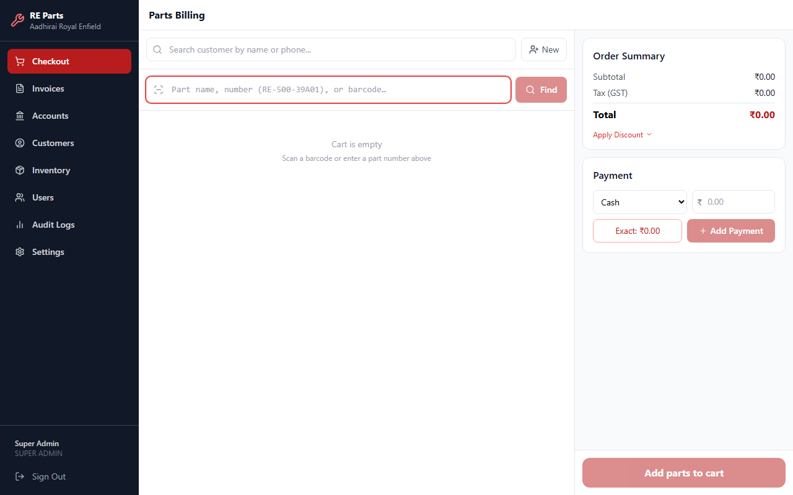
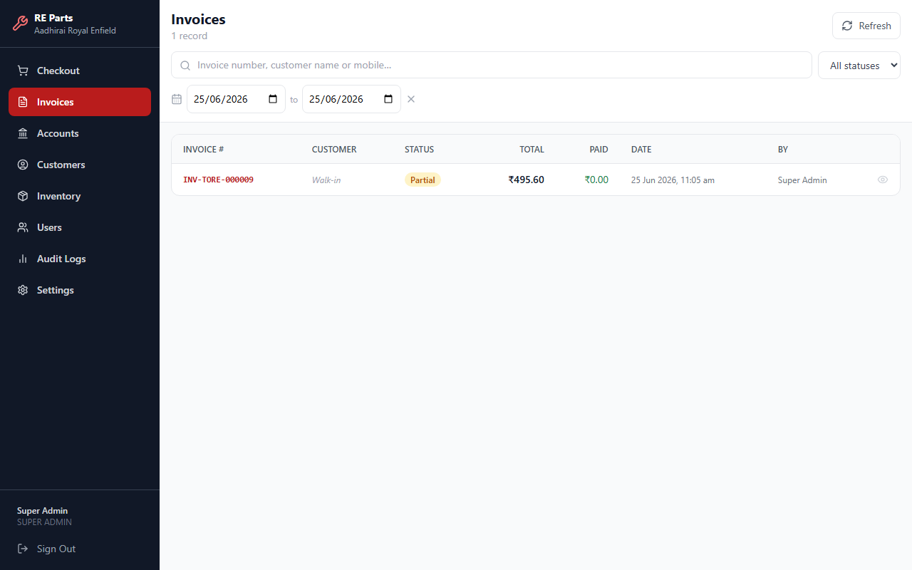
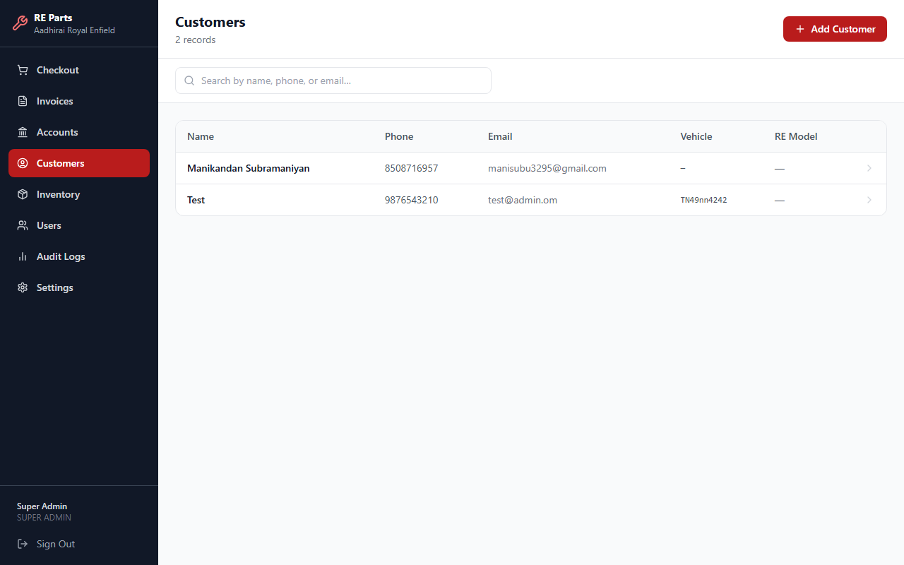
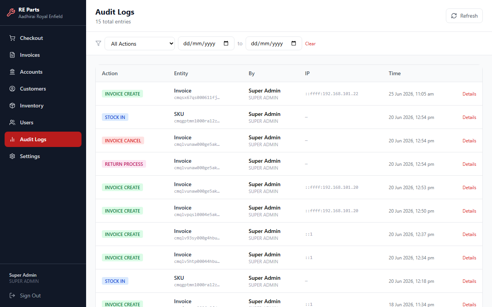
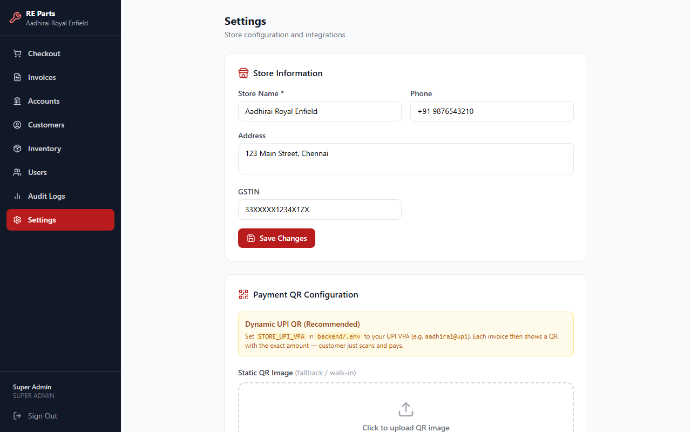

Signing In
Access the system with your store credentials

Login page — https://billing.aadhiraiinnovations.com
- Open https://billing.aadhiraiinnovations.com in any browser.
- Enter your Email address.
- Enter your Password.
- Click Sign In. You will be taken directly to the Billing screen.
Admin: admin@aadhirai.com / Admin@1234
Clerk: clerk@aadhirai.com / Clerk@1234
Change these passwords after first login via Settings → Users.
Billing / Checkout
Create a new sale and generate an invoice

Checkout — Parts Billing screen with cart and order summary
How to create a bill
- Search for a customer by name or phone number in the top search box. Leave blank for a walk-in customer.
- Search for a part by name, part number (e.g. RE-500-39A01), or barcode in the part search box. Click Find or press Enter.
- The part appears in the cart. Adjust the quantity if needed.
- Repeat steps 2–3 to add more parts.
- Optionally click Apply Discount to add a flat or percentage discount.
- Select the Payment Mode (Cash, UPI, Card, etc.) and enter the amount received.
- Click Add Payment, then confirm the invoice to complete the sale.
Invoices
View, search and manage past bills

Invoices list — searchable with date range filter and status filter
- Click Invoices in the left sidebar.
- Use the search box to find by invoice number, customer name, or phone.
- Use the date pickers to filter by date range.
- Use the status dropdown (All / Paid / Partial / Cancelled) to filter by status.
- Click the eye icon on any row to view full invoice details and print.
Accounts & Collections
Revenue summary, payment breakdown and outstanding amounts

Accounts — daily/weekly/monthly revenue with outstanding invoices
- Click Accounts in the left sidebar.
- Choose Today / This Week / This Month / Custom to change the period.
- The top cards show: Total Billed, Collected, Outstanding, Cancelled, Avg Invoice.
- The Payment Mode Breakdown shows how much was collected via Cash, UPI, Card, etc.
- The Outstanding / Credit Invoices table lists bills that are not fully paid.
- Click CSV or PDF to export the report.
Parts Inventory
Manage stock, add new parts and monitor low-stock alerts

Parts Inventory — 7 parts with categories, part numbers and stock counts
- Click Inventory in the sidebar.
- Search by part name, part number, or compatible models.
- Click the arrow on any row to expand and see variants (e.g. 20W50, 10W40).
- Click + Add Part to add a new spare part with variants, price and stock.
- Click the Low Stock Alerts tab to see parts below their threshold.
- Use Export / Import to bulk-update stock via CSV.
Bulk Qty — for standard parts (filters, oils, plugs). Stock number goes up/down.
Serialized — for high-value assemblies (gasket kits). Each unit has its own serial number tracked individually.
Customers
Manage customer records with vehicle details

Customers — list with name, phone, vehicle registration and RE model
- Click Customers in the sidebar.
- Search by name, phone, or email.
- Click + Add Customer to register a new customer.
- Fill in Name, Phone (required), Email, Address, GSTIN, Vehicle No, and RE Model.
- Click a customer row to view their full profile and invoice history.
User Management Admin only
Add and manage staff accounts

User Management — staff list with roles and account status
- Click Users in the sidebar (visible to Super Admin only).
- Click + Add User to create a new staff account.
- Enter Name, Email, Password, Phone, and assign a Role.
- To deactivate an account, click the toggle icon on the right of the user row.
Role Permissions
| Feature | Super Admin | Billing Clerk |
|---|---|---|
| Create Bills | ✔ | ✔ |
| View Invoices | ✔ | ✔ |
| View Accounts | ✔ | ✔ |
| Manage Inventory | ✔ | — |
| Manage Customers | ✔ | ✔ |
| Manage Users | ✔ | — |
| View Audit Logs | ✔ | — |
| Change Settings | ✔ | — |
Audit Logs Admin only
Full trail of every action taken in the system

Audit Logs — every invoice, stock and user action with timestamps and IP addresses
- Click Audit Logs in the sidebar.
- Filter by Action type (Invoice Create, Stock In, Return, etc.).
- Filter by date range to narrow results.
- Click Details on any row to see before/after values for that change.
Settings Admin only
Configure store information and payment QR

Settings — store name, address, GSTIN and UPI QR configuration
- Click Settings in the sidebar.
- Update Store Name, Phone, Address, and GSTIN.
- Click Save Changes.
- Under Payment QR Configuration, upload a static UPI QR image to show on invoices.
Frequently Asked Questions
Common questions and answers